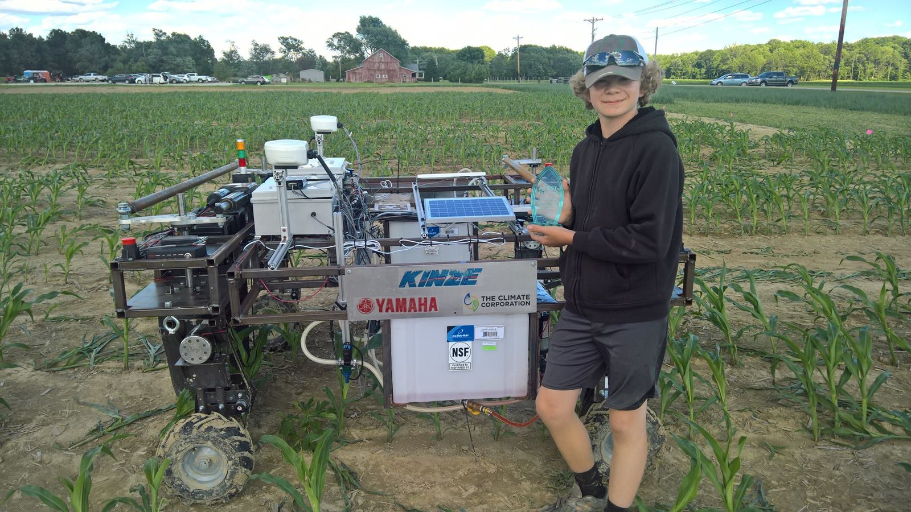

June 2017
agBOT Challenge: autonomous weed and feed robot
At 12 years old, I designed and built a robot for the agBOT Challenge Weed & Feed Competition at Gerrish Farms in Rockville, Indiana, entering as Team Gizmoze with my father as an advisor. The task was to build a robot that drives itself down rows of corn, finds and sprays weeds, and fertilizes the crop.
- Placed third and won $10,000, competing against university and company teams including Purdue, IUPUI and the University of Regina.
- Robot navigated the corn rows autonomously, with targeted spraying for weeds and fertilizer delivery for crops.
- Judged by engineering leaders from Yamaha Motor Ventures, The Climate Corporation and Blue River Technology.
- Autodesk Inventor
- LabVIEW
- Autonomous navigation
- Fluid delivery
